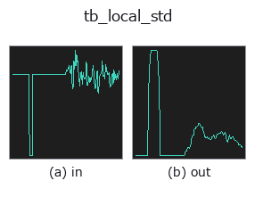

typed op• Data kinds: signal → signal
• Call: fullseye.apply(img, "tb_local_std", a=0.5, b=0.5) (the 2-D model is one image plus two scalar knobs a,b∈[0,1])

*The figure is the actual output on a synthetic 128×128 input. Left: input, right: output. Point clouds are drawn as a top-down scatter (brightness = z), 1-D series as a line plot, volumes as the maximum-intensity projection along z, videos as the middle frame, complex images as magnitude; return values that are not pictures are shown as the values themselves.*
Sweeping knob a (0.1 / 0.5 / 0.9, the other knob at its default):
▸ tb_local_std: knob a sweep (docs site)
*Knob b does not change the output (measured: identical at 0.1 / 0.5 / 0.9).*
Stages (the ops that come before → this op, left to right):
▸ tb_local_std: stages (docs site)
On other images (synthetic scene / photo / coins. Top row: inputs, bottom row: their outputs. Knobs at default):
▸ tb_local_std: other inputs (docs site)
Rolling standard deviation with a stated error bound.
The 1-D counterpart of the image operator `local_std` (HALCON's
`deviation_image`): the variance is taken after subtracting the mean
(`E[x^2] - E[x]^2` loses its significant digits on a signal that sits far
from zero), unbiased by `n/(n-1)`, and the residual bias of the square root
removed by `c4(n), so the estimate of sigma` itself is unbiased.
*window* is the number of samples in the sliding window, **rounded up to the
next odd number** so the window can be centred (10 becomes 11). The error
bound below is computed from the window actually used, so the number quoted
stays true. The 2-D side does the same thing — `_k(a)` snaps the knob to
3/5/7/9 — and the typed bridge that exposes this op as `tb_local_std`
scales the knob continuously, so an even value arrives whenever the knob
lands between two odd ones.
**The relative standard error of each estimate is `1/sqrt(2(n-1))`** —
35 % for a 5-sample window, 11 % for 41. Quote it next to any noise figure:
a rolling sigma over 9 samples is +- 25 %, which is wider than most of the
changes people try to read off it.
Returns an array the same length as *x* (the ends are reflected).
Typed bridge of the 1d op `local_std into the 2-D evolution registry: the same implementation, called under the op(v, a, b) convention. a drives window (default 9); b` is unused.
• Sample-data catalog (download URLs / licences) — 2-D uses skimage.data (BSD/public domain) plus synthetic images; 3-D lists download URLs for real data sources (Stanford, PDS, …).
• Operator provenance and references — the sources of the research/methods this op family came from.
The program below has been verified to run (same input as the figure). In Studio's help this block becomes buttons that load and run it on the spot.
img_to_signal 0.50 0.50 tb_local_std 0.50 0.50
▸ Load this pipeline · Load & run
The examples below call the underlying ledger op local_std. This bridge op is the same implementation adapted to the fn(v, a, b) convention, so the behaviour carries over unchanged (only the call form differs).
• gallery2d_texture_freq — py -3.11 examples/gallery2d_texture_freq.py
signal as input)identity · tb_create_funct_1d_array · tb_smooth_funct_1d_gauss · tb_smooth_funct_1d_mean · tb_derivate_funct_1d · tb_integrate_funct_1d · tb_zero_crossings_funct_1d · tb_abs_funct_1d
typed)tb_points_to_voxel · tb_estimate_point_normals · tb_iss_keypoints · tb_project_points · tb_render_point_depth · tb_statistical_outlier_removal · tb_radius_outlier_removal · tb_voxel_grid_downsample
*Provenance: ops.py — 2D operator registry. This per-op note is generated by tools/opdocs.py md (do not hand-edit).*
© 2026 Kazufumi Furuse — Fullseye operator documentation. Licensed under Apache-2.0.
{kind=link}
{kind=link}
{kind=link}